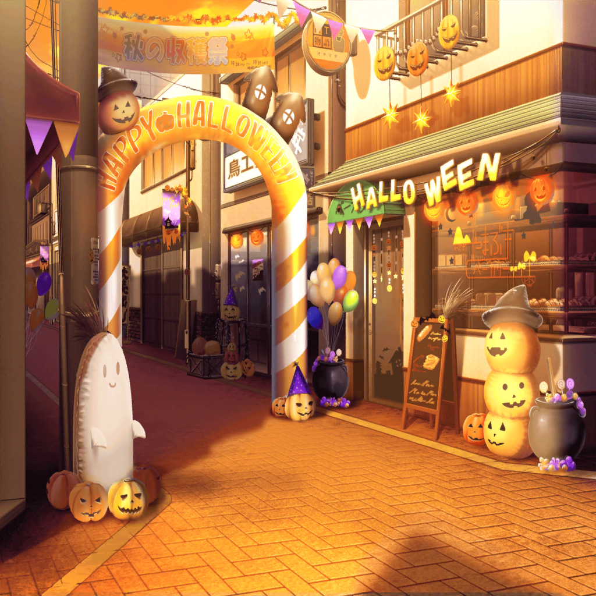

放課後
商店街 ハロウィン競争集合場所
こころ
着替えていたら遅くなっちゃったわね。
みんなはもう来てるのかしら？
こころ
それにしても、美咲はどこへ行ちゃったのかしら？
代わりにミッシェルが来てくれたからいいけど……
美咲と一緒に魔女の格好をしたかったわ
ミッシェル
……そ、そう言えば、美咲は用事を思い出したって、
言ってたよ
こころ
そうなの。
それはとても残念ね
ひまり
あ、こころ達だ！
お～い、こっちだよ～！
こころ
みんな、揃っていたのね！
りみ
あ、あの、こころちゃん。
まだ、沙綾ちゃんの代わりの人が来てなくて……
怪盗ハロハッピー
私を呼んだかい、子猫ちゃん
りみ
え……ええっ！
誰ですか～！？
ミッシェル
（か、薫さん！？）
こころ
あなたは……怪盗さん！
もしかしてハロウィン大会に参加しに来てくれたのかしら！？
怪盗ハロハッピー
ああ、そこの角に住まうお姫様に頼まれてね
巴
角って……やまぶきベーカリーのことか？
こころ
なるほど！ 沙綾が言ってた助っ人があなただったのね！
それじゃあ、怪盗さんはりみと同じチームになってちょうだい！
りみ
あ、あの……よ、よろしくお願いします！
りみ
（うぅ……沙綾ちゃん、私の知ってる人だって言ってたけど、
こんな素敵な人、知らないよぉ……
ど、どうしようっ、ドキドキが止まらない……！）
怪盗ハロハッピー
ああ、よろしく。私のパートナーが
こんなにかわいらしいお姫様だなんて光栄だよ。
今宵は、素敵なハロウィンにしようね
りみ
（……あ、あれ？
この声、どこかで聞いたことがあるような……
気のせいかな？）
ミッシェル
（牛込さんのあの反応……
もしかして、怪盗の正体に気付いてないとか？
……いや、まさかね。こころじゃあるまいし）
こころ
ミッシェルに怪盗さんに、
今日は素敵なゲストが来てくれて嬉しいわ！
こころ
それじゃあ、みんなそろったし
そろそろ始めましょう！
あこ
全員、待たれよ！！
巴
お、来たな
あこ
そのイベント、あこ……じゃなくてっ、
わらわ達も参加させてもらう！
こころ
あなたはRoseliaの……あこね！
ええ、もちろん大歓迎よ！
あこ
本当に！？
やったぁ～！
こころ、ありがとう～！
こころ
みんなで楽しみましょうね、あこ！
それであなたのパートナーはどこにいるのかしら？
友希那
…………
怪盗ハロハッピー
ほう、猫の仮装か。
友希那、君がそんな格好をするなんて意外だよ
友希那
衣装については触れないで……
あこが勝手に用意したものだから
りみ
でも、とっても似合ってます！
あこちゃんの天使の格好も、
すごくかわいいし……
あこ
これはただの天使じゃなくて堕天使だよ！
わらわは黙示録に記されている
最強の堕天使なるぞ……ふっふっふ……
りみ
みんな、ちゃんと仮装してる……
私も、もうちょっとちゃんとすればよかったかな
怪盗ハロハッピー
そんなことないさ。
その魔女のハットがついているカチューシャは、
とても子猫ちゃんに似合っている
あこ
おねーちゃん達は……ヴァンパイア？
巴
ああ……まあな。
……アタシには似合わないから
あまりしたくなかったんだけど
ひまり
えー、なんで？
似合ってるよね？
こころ
とても似合っているわ、巴！
どこからどう見ても、ふたりともヴァンパイアよ！
ひまり
こころの魔女もすっごくかわいい！
ミッシェルもね♪
カボチャ、すっごく似合ってる！
ミッシェル
それは……褒められてるのかな。
ありがとう
こころ
素敵な仮装に素敵な参加者！
最高だわ！
それじゃあ、改めてルールを説明するわね！
こころ
今日はみんなも知っての通りハロウィン！
だから、商店街でお菓子を集めるのよ！
友希那
……さっぱりわからないわ
ミッシェル
そうですよね……
あたしからちゃんと説明させてもらいます
ミッシェル
ええっと、ハロウィンって、
トリックオアトリートって言うとお菓子がもらえますよね？
この商店街でも、同じことを毎年やっているみたいなんです
ミッシェル
なので、商店街に買い物に来ている人や、
お店の人からお菓子を１番もらったチームが
勝ちってことです
あこ
とりあえず、お菓子を集めればいいんだね！
ミッシェル
あ、あと収集つかなくなるので制限時間は１時間。
１度お菓子をもらった人からはもらっちゃいけないってルールも
追加でお願いします
ミッシェル
……それと、今日はこころにつき合わせちゃってすみません
怪盗ハロハッピー
ふっ、君が謝ることはないよ。
こんなに楽しい催しはそうそう巡り合えないからね
あこ
優勝は、あこと友希那さんのチームがいただきっ！
頑張りましょうね、友希那さん！
友希那
そうね。
やるからには負けたくないわ
怪盗ハロハッピー
りみちゃん、優勝は私達に決まっているさ。
力を合わせて、頑張ろう
りみ
は、はい！
ひまり
私達だって負けないよー！
ね、巴！
巴
ああ、そうだな
こころ
ふふ、みんな最高の意気込みだわ！
こころ
それじゃあ、いくわよ！
レッツ、ハロウィン、スペシャール！